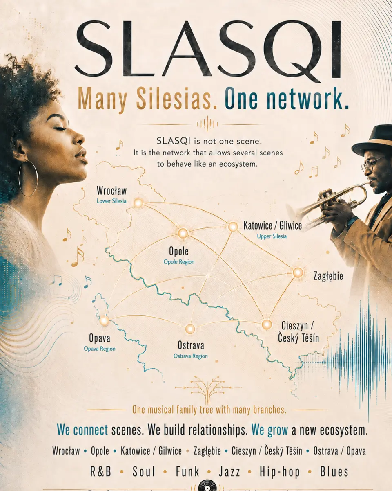

Independent music ecosystem Silesia / Śląsk
Many Silesias.
One network.
SLASQI connects artists, listeners and independent music initiatives across regions and borders.
R&B · Soul · Funk · Jazz · Hip-hop · Blues
01 / The network
One family.
Many branches.
Each branch has its own role. Together they help local scenes discover one another, collaborate and grow.
groove.slasqi.com
SLASQI
Groove
The live band, writing room and shared groove at the heart of the family.
ar.slasqi.com
Artists &
Scene Radar
A living atlas of artists, venues, collectives and signals worth following.
distribution.slasqi.com
SLASQI
Distribution
Independent release support built around long-term relationships, not volume.
records.slasqi.com
SLASQI
Records
A curatorial home for releases that sound rooted, open and unmistakably their own.
02 / The territory
A network shaped by places.
This is not one centre speaking for everyone. It is a route between distinct scenes — close enough to meet, different enough to bring something new.
- 01WrocławLower Silesia
- 02OpoleOpole Silesia
- 03Katowice / GliwiceUpper Silesia
- 04ZagłębieZagłębie Dąbrowskie
- 05Cieszyn / Český TěšínBorderland
- 06OstravaMoravian-Silesian
- 07OpavaOpava Silesia

03 / The idea
Not one scene.
An ecosystem.
SLASQI is a connective layer: between cities, genres, generations and both sides of the border.
We connect scenes. Local identity stays local. The network makes it easier to be heard elsewhere.
We build relationships. Artists, listeners, venues and independent partners meet around music first.
We grow together. Shared knowledge and infrastructure turn isolated momentum into continuity.
Many roots. Many voices. One musical family.